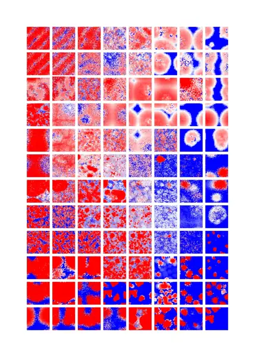

ACADEMIC PROFILE / COMPLETE CURRICULUM
Education, experience
& academic activities.
A detailed record of academic training, research positions, teaching, scientific activities and other achievements.
Introduction
- Job profile
-
Post-doctoral research fellow in Computational Neuroscience
- Main topics
-
Modeling, algorithms and data-analysis for brain’s multi-scale spatio-temporal features
- Web links
-
ORCID:0000-0002-6572-0434 | Github | ResearchGate | Google Scholar | Scopus | IRIS · University of Pavia | DBLP
- Current position
-
Research Fellow at University of Pavia, Department of Brain and Behavioural Sciences, Egidio D’Angelo’s Lab, Pavia, Italy (albertoarturo.vergani@unipv.it)
- Affiliations & networks
-
Member, Global Burden of Disease (GBD) Collaborator Network · Institute for Health Metrics and Evaluation (IHME)
Pillar 1: Computational intelligence for representation, clustering and network analysis. I developed computational methods for high-dimensional neuroimaging, including an FSL-based hybrid brain atlas and Activation Weighted Vectors [related publications]; fuzzy, competitive-learning and soft-classification methods for functional neuroimaging [related publications]; and a soft Davies–Bouldin index for non-crisp cluster validation [related publications]. I further applied spectral, functional-connectivity and random-matrix approaches to resting-state fMRI and recurrent network-state identification [related publications]. These contributions formed the core of my PhD research in computational intelligence for functional neuroimaging [related publications].
Pillar 2: Algorithms for electrophysiological signal processing and phenotyping. I extended this algorithmic framework to neural time series, developing pipelines for preprocessing, temporal and spectral feature extraction, ERP analysis and data-driven phenotyping. Starting from cognitive reserve [related publications], I applied these methods to cognitive decline [related publications], machine-learning and personalized modelling of Alzheimer’s disease [related publications], Parkinson’s disease [related publications], cognitive load [related publications], autism [related publications], ataxia [related publications], and ex vivo electrophysiology [related publications]. I also developed computational approaches for TMS electrophysiology in genetic epilepsy [related publications] and for recovering neural activity from extreme TMS–EEG artifacts [related publications].
Pillar 3: Mechanistic modelling, neuromorphic computing and digital brain simulation. I developed multiscale computational models ranging from spiking and neuromorphic networks for associative memory, critical dynamics and anticipatory processing [related publications] to personalized and mechanistic brain models. This includes cerebellar models of degeneration, compensation and network dysfunction in schizophrenia [related publications], as well as multiscale models integrating numerical electric-field dosimetry with neural dynamics [related publications]. Overall, my work connects data-driven algorithms with computational models for extracting, reproducing and explaining complex neural dynamics.
Minor: History of neuroscience, brain-art and digital education
I explore the history of neuroscience, from its theoretical [related publications] to anatomo-physiological foundations [related publications]; neuroscience-inspired digital creativity through Neural Turing Patterns, Berger Mandalas, and Neural Graffiti; and education strategies in digital era of neuroscience [related publications].
Prizes, Proposals and Fellowships
Prizes
- 2026
-
Best Review Article Award, Advances in Physiology Education. Awarded by the American Physiological Society for the article: Vergani, A. A. (2024). “Hans Berger (1873-1941): the German psychiatrist who recorded the first electrical brain signal in humans 100 years ago”. Advances in Physiology Education. [related publications] DOI: 10.1152/advan.00119.2024.
- 2025
-
Best Poster Award at Dynamics and Complexity workshop (DCP25, Pisa, 9-11 July 2025). Title of the poster: "Cerebellar Resilience Modulates Deep Nuclei Overdrive and Sensorial Dysmetria Across the Schizophrenia Continuum" (Vergani AA, Faris P, De Grazia M, Casellato C, D’Angelo UE) [related publications]
- 2025
-
1st ranked at Brain and Art Prize at Organization of Human Brain Mapping (OHBM) conference in Brisbane (June 25, 2025 - June 28, 2025), for the Open Science Creations section, with the artwork Berger Mandalas
- 2022
-
1st ranked at Brain and Art Prize at Organization of Human Brain Mapping (OHBM) conference in Glasgow (June 19, 2022 - June 23, 2022), for the section Beautiful Mistakes, with the artwork Neural Turing Patterns
- 2022
-
Best Poster Award at Dynamics and Complexity workshop (DCP22, Pisa, 26-28 May 2022). Title of the poster: "Mean field model of resting state cortical dynamics in prodromics phases of Alzheimer’s diseases" (Amato LG, Vergani AA, Mannella R, Mazzoni A) [related publications]
- 2021
-
2nd ranked at Brain and Art Prize, NeuroMarseille, with Neural Turing Patterns. The artwork has been exposed in Marseille at La Pangoline Gallery during the Fall 2021 and it will be exposed during the Fall 2022 at campuses of Aix-Marseille Université (for more details see the Brain Art section [Neuroscience Art]
- 2018
-
Best Conference Paper with the Taylor and Francis prize for the section Imaging and Visualization at the 15th International Symposium on Computer Methods in Biomechanics and Biomedical Engineering and 3rd Conference on Imaging and Visualization (CMBBE2018, Lisbon, 26-28 March 2018). Title of the paper: "Resting State fMRI Functional Connectivity Analysis Using Soft Competitive Learning Algorithms". After the prizewinning, the conference paper has been extended and published as research article: Vergani AA, Martinelli S, Binaghi E (2020). Resting state fMRI analysis using unsupervised learning algorithms. Computer Methods in Biomechanics and Biomedical Engineering: Imaging and Visualization, 8(3), 252-265. [related publications]
Winning Proposals
- 2025
-
Proposal at SIPF 2025 (Italian Society of Psychophysiology and Cognitive Neurosciences) for organizing the symposium Tracing Brain Evolution Through Fossils and Digital Models, focused on large-scale brain adaptation through paleo-neurology and computational modeling. Speakers: Dr. Carmela Serio (University of Napoli Federico II), Dr. Marina Melchionna (University of Napoli Federico II), and Dr. Gabriele Sansalone (University of Modena and Reggio Emilia / University of New England). The event is scheduled to take place in Verona, September 17–19, 2025.
- 2025
-
Proposal at CNS*2025 (Organization for Computational Neurosciences) for organizing the workshop Computational Modeling of Electromagnetic Field Perturbations on Neural Activity throughout Multiscale Brain Models, in collaboration with Prof. Claudia Casellato. The workshop will take place in Florence, July 5–9, 2025, and features presentations by Dr. Micol Colella (Sapienza University), Dr. Niels Kuster and Dr. Antonino Cassarà (IT’IS Foundation), Prof. Daniele Linaro (Politecnico di Milano), Marialaura De Grazia (University of Pavia), Dr. Davide Momi (Stanford University), Marius Pille (Universitätsmedizin Berlin), and Gianluca Gaglioti (University of Milan).
- 2024
-
Proposal at SIPF 2024 (Italian Society of Psychophysiology and Cognitive Neurosciences) for organizing a symposium on Sport Neuroscience titled Decoding Sports Performance: Investigating the neural correlates of anticipation functions prior to action, featuring speakers: Prof. Valentina Bianco (UNIPV), Prof. Francesco Di Russo (Uniroma4), and Prof. Germanio Gallicchio (Bangor University).
- 2023
-
Proposal for THRUSTER initiative with the business idea helmEEG, concerning the integration of soft EEG electrodes in a crash helmet, in collaboration with Prof. Flavia Vitale (UNIPENN).
- 2022
-
Co-winner of EELISA grant for organizing a spring school “Ethos + Tekhnè: a new generation of AI researchers”, in collaboration École normale supérieure (Stefano Vrizzi) in Paris and with Scuola Normale Superiore in Pisa (Laura State, Filippo Galli). The school was held in Pisa, 6-10 March 2023.
Fellowships and other mentions
- 2024-2025
-
Postdoctoral Fellowship at the University of Pavia, Department of Brain and Behavioral Sciences, Egidio D’Angelo’s Lab, Neurocomputing subunit (headed by Prof. Claudia Casellato), working on the project Construction and Simulation of Cerebellar Neural Networks for Brain Digital Twins Applied to Schizophrenia, funded by Virtual Brain Twin, under the supervision of Prof. Egidio D’Angelo.
- 2023-2024
-
Postdoctoral Fellowship at SSSA, The BioRobotics Institute, Pisa-Pontedera (IT) by the TMSpath project Bando Ricerca Finalizzata 2021 - working on electrophysiological correlates of transcranial magnetic stimulation as a surrogate for pathophysiology in genetic epilepsy, supervised by Prof. Alberto Mazzoni
- 2021-2023
-
Postdoctoral Fellowship at SSSA, The BioRobotics Institute, Pisa-Pontedera (IT) by PREVIEW project - Bando Ricerca in Salute Regione Toscana 2018, working on electrophysiological correlates of prodromal forms of dementia, such as subjective cognitive decline and mild cognitive impairment, with the aim to find functional biomarkers able to predict the prodomic path of the patients, supervised by Prof. Alberto Mazzoni.
- 2020-2021
-
Postdoctoral Fellowship at INT Marseille (FR) by French ANR Horizontal-V1, working on the project Visual cortex modelling with classic and neuromorphic machines, supervised by Prof. Laurent Perrinet and Prof. Frédéric Chavane. The cross-talk between physiological and theoretical approaches was fostered by the close collaboration with the teams of Frédéric Chavane at INT and Yves Frégnac at UNIC. The theoretical work is performed in close collaboration with Lyle Muller (Western U) and Jan Antolik (Prague).
- 2019-2020
-
Postdoctoral Fellowship at Middlesex University (UK) by The Human Brain Project (HBP), working on a topic called NEAL (Neuromorphic Agents that Learn), headed by Prof. Chris Huyck, that is part of the SP9 Neuromorphic Subproject. The main task was to develop agents for virtual environments implemented in simulated and emulated spiking neurons.
- 2015 - 2018
-
Italian PhD Fellowship for the PhD program in Computer Science and Computational Mathematics (XXXI Cicle), University of Insubria, Department of Theoretical and Applied Science, Varese, Italy. The research activities were at CRAIIM, Centre for Research in Image Analysis and Medical Informatics, headed by Prof.ssa Elisabetta Binaghi, in collaboration with the Medical Physics Unit, the Neurosurgery Unit and the Functional Neuroradiology Unit, at Hospital of Varese (Circolo e Fondazione Macchi). Thesis projects: Contributions in computational intelligence with results in functional neuroimaging. Supervisor: Prof. Elisabetta Binaghi.
- 2014 - 2018
-
Travel Grants by Human Brain Project (HBP) and Partnership for Advanced Computing in Europe (PRACE) for attending schools, workshops and short classes.
- 2012
-
Civil recognition by the Major of Cairate (VA), Italy.
Academic Information
Positions
- 2024-2026
-
Postdoctoral researcher - Research Fellow (RF)
- College
-
University of Pavia, Pavia, IT
- Division
-
Department of Brain and Behavioral Sciences
- Lab
-
Egidio D’Angelo’s Lab
- Sub-Unit
-
Neurocomputation
- Supervisors
-
Prof. Egidio D’Angelo, Prof. Claudia Casellato
- Project
-
Construction and simulation of cerebellar neural networks for brain digital twins applied to schizophrenia
- Project PI
-
Prof. Egidio D’Angelo
- Fund
-
Virtual Brain Twin (No 101137289)
- Italian SSD
-
BIO/09 - Physiology
- Outcomes
- Topics
-
Designing bio-inspired digital brain replica
Investigating the cerebellum’s role in psychiatric diseases
Understanding the etiopathogenesis of schizophrenia
- 2023-2026
-
Postdoctoral researcher - Research Fellow (RF)
- College
-
Sant’Anna School of Advanced Studies, Pisa, IT
- Division
-
The BioRobotics Institute
- Lab
-
Computational Neuroengineering Lab, headed by Prof. Alberto Mazzoni
- Supervisor
-
Prof. Alberto Mazzoni
- Project
-
TMSpath - Longitudinal study of the use of transcranial magnetic stimulation (TMS) as a surrogate for pathophysiology in genetic epilepsies
- Project PI
-
Prof. Simona Balestrini (MEYER IRCCS, UNIFI)
- Clinical Trial
- Fund
-
Fellowship from bando ricerca finalizzata 2021
- Italian SC
-
Settore Concorsuale 09/G2
- Italian SSD
-
ING-INF/06 - Bioingegneria Elettronica e Informatica
- Outcomes
- Topics
-
Pathophysiology in genetic epilepsies
Simultaneous TMS stimulations and EEG recordings
EEG processing and TEP analysis
- 2021-2023
-
Postdoctoral researcher - Research Fellow (RF)
- College
-
Sant’Anna School of Advanced Studies, Pisa, IT
- Division
-
The BioRobotics Institute
- Lab
-
Computational Neuroengineering Lab, headed by Prof. Alberto Mazzoni
- Supervisor
-
Prof. Alberto Mazzoni
- Project
-
PREVIEW - PRedicting the EVolution of SubjectIvE Cognitive Decline to Alzheimer’s Disease With machine learning
- Project PI
-
Prof. Valentina Bessi (CAREGGI AOU, UNIFI)
- Clinical Trial
- Fund
-
Fellowship from Bando Ricerca in Salute Regione Toscana 2018
- Italian SC
-
Settore Concorsuale 09/G2
- Italian SSD
-
ING-INF/06 - Bioingegneria Elettronica e Informatica
- Outcomes
- Topics
-
Neurophysiology of degenerative disorders
Brain cognitive reserve biomarkers
EEG analysis and modeling
- 2020-2021
-
Postdoctoral researcher - Research Fellow (RF)
- College
-
University of Aix-Marseille, Marseille, FR
- Division
-
Institut de Neuroscience de la Timone
- Lab
-
NeOpTo group, headed by Prof. Frederic Chavane
- Supervisor/PI
-
Prof. Laurent Perrinet
- Project
-
Visual cortex modelling with classic and neuromorphic machines
- Fund
-
Fellowship from French ANR Horizontal V1
- Outcomes
- Topics
-
Primary visual cortex modeling and simulations
Sensory-evoked traveling waves and dynamic neuronal association fields
Optical imaging, psychophysics, and neural basis of Gestalt principles
- 2020-2021
-
Postdoctoral researcher - Research Fellow (RF)
- College
-
Middlesex University, London, UK
- Divison
-
Department of Computer Science
- Lab
-
Chris Huyck’s lab
- Supervisor/PI
-
Prof. Chris Huyck
- Project
-
Neuromorphic Embodied Agent That Learn
- Fund
-
Fellowship from Horizon 2020 grant No 720270 (The Human Brain Project).
- Outcomes
- Topics
-
Cognitive agents modeling with spiking neural networks
Neuromorphic simulations via HBP infrastructures (SpiNNaker and BrainScaleS)
Cell assemblies theory and models, attractor networks
- 2015-2018
-
Early Stage Researcher - PhD researcher
- Degree
-
PhD in Computer Science and Computational Mathematics
- College
-
University of Insubria, Varese, IT
- Division
-
Department of Theoretical and Applied Science
- Lab
-
CRAIIM group, headed by Prof. Elisabetta Binaghi
- Supervisor
-
Prof. Elisabetta Binaghi
- Project
-
Computational Intelligence Applications in Functional Neuroimaging
- Fund
-
Fellowship from Italian Ministry of Education and Research
- Outcomes
- PhD thesis
-
Contributions in computational intelligence with results in functional neuroimaging (Ref: [related publications])
- Topics
-
Computational intelligence and soft computing
Unsupervised learning algorithms
Structural and functional MR image processing and analysis
- 2014
-
Master thesis internship
- Degree
-
MSc in Cognitive Science, curriculum in Decision Processes
- College
-
University of Milan, IT
- Lab
-
Raffaella Folgieri’s lab
- Supervisor
-
Prof. Raffaella Folgieri
- Project
-
Electrophysiological data analysis acquired via Brain-Computer Interface
- MSc thesis
-
Computational science and emergent neuroinformatics technologies (Ref: [related publications])
- Topics
-
Brain-Computer Interface (BCI)
Spatio-temporal data analysis and Electrophysiology
History of Artificial Intelligence (co-supervisor: Prof. Gianfranco Prini)
- 2010
-
Bachelor thesis internship
- Degree
-
BSc in Psychology, curriculum in Neuroscience
- College
-
Vita-Salute San Raffaele University, Milan, IT
- Division
-
Nuclear Medicine Unit
- Supervisor
-
Prof. Daniela Perani
- Project
-
State of the art about the brain and cognitive reserve hypotesis
- BSc thesis
-
The reserve of cognitive functions in dementia (Ref: [related publications])
- Topics
-
Brain and Cognitive reserve hypothesis
Structural and functional neuroimaging
Brain plasticity processes in dementia
Collaborations
- 2022-now
-
Prof. Mark Richardson, Harvard Medical School, Boston, USA
- Joint topics:
-
i) Computational study of Parkison’s disease pathophysiology
-
ii) Embedding humans cortical recordings in a basal ganglia model
-
iii) Data analysis of humans subcortical recordings (STN and GPe nuclei)
- 2020-now
-
Prof. Stefania Boffa, University of Milano-Bicocca, IT
- Joint topics
-
i) Many-valued logics calculus
-
ii) Fuzzy and rough set theory
-
iii) Mathematics of machine learning
Visiting periods
- Oct 2022
-
Harvard Medical School, Boston, Massachusetts, USA
- Lab
-
Brain Modulation Lab, MGH
- Tutors
-
Prof. Mark Richardson and Prof. Alan Bush
- Topics:
-
i) Computational study of Parkison pathophysiology
-
ii) Embedding humans cortical recordings in a basal ganglia model
- May 2019
-
Kirchhoff-Institut für Physik, Heidelberg, DE
- Lab
-
Electronic Vision(s) lab
- Tutor
-
Prof. Sebastian Smith
- Topics:
-
i) Induction on the BrainScaleS neuromorphic hardware
-
ii) Implementation of a Finite State Machine on BrainScaleS
- Spring 2018
-
Middlesex University, London, UK
- Lab
-
Artificial Intellgence Lab
- Tutor
-
Prof. Chris Huyck
- Topics:
-
i) Induction on the Neuromorphic Computing Platform of Human Brain Project (HBP)
-
ii) Modeling of neurocognitive agents by using PyNN, Nest and sPyNNaker
- Fall 2017
-
CNR, Institute of Biophysics, Palermo, IT
- Lab
-
Computational neuroscience lab
- Tutor
-
Prof. Michele Migliore
- Topics:
-
i) Induction on the Brain Simulation Platform of Human Brain Project (HBP)
-
ii) Modeling cellular level model of the hippocampus with NEURON and python.
Teaching
Adjunct Professor in Numerical methods (FIS/01) (Neuroscience module)
Spring 2024, 8h, Master degree in Physics, University of Pisa, Italy
Spring 2023, 6h, Master degree in Physics, University of Pisa, Italy
Teaching seminars
Computational Neuroscience
May 2025. 4h inside the master class on Brain modeling (BIO/09) (Prof. Claudia Casellato), MSc in Psychology, University of Pavia
May 2025. 4h inside the master class on Brain modeling (BIO/09) (Prof. Claudia Casellato), MSc in Human-Centered IA, Pavia-Bicocca-UNIMI
February 2026, 12h, Introduction to Algorithms for Modeling Virtual Brain Twins, MSc in Psychology, University of Pavia, IUSS, Italy
December 2025. 5h inside the bachelor class on Brain modeling (BIO/09) (Prof. Claudia Casellato), BSc in Artificial Intelligence, University of Pavia-Bicocca-UNIMI
February 2025, 12h, Introduction to Algorithms for Modeling Virtual Brain Twins, MSc in Psychology, University of Pavia, IUSS, Italy
November 2024. 5h inside the bachelor class on Brain modeling (BIO/09) (Prof. Claudia Casellato), BSc in Artificial Intelligence, University of Pavia-Bicocca-UNIMI
March 2024. 3h inside the Master class on Biorobotics and Complex Systems (FIS/03) (Prof: Alberto Mazzoni), Physics Degree, University of Pisa, Italy.
November 2023. 5h inside the bachelor class on Brain modeling (BIO/09) (Prof. Claudia Casellato), BSc in Artificial Intelligence, University of Pavia-Bicocca-UNIMI
December 2023. 3h inside the PhD class on Information Theory and Neural Modeling for Neural Engineering (ING-IND/34) (Prof: Alberto Mazzoni), PhD Program in Biorobotics, Scuola Superiore Sant’Anna, Pisa, Italy.
March 2023. 5h inside the Master class on Biorobotics and Complex Systems (FIS/03) (Prof: Alberto Mazzoni), MSc in Physics, University of Pisa, Italy.
December 2022. 3h inside the PhD class on Information Theory and Neural Modeling for Neural Engineering (Prof: Alberto Mazzoni), PhD Program in Biorobotics, Scuola Superiore Sant’Anna, Pisa, Italy.
January 2022. 5h inside the Master class on Biorobotics and Complex Systems (FIS/03) (Prof: Alberto Mazzoni), MSc in Physics, University of Pisa, Italy.
December 2021. 5h inside the PhD class on Information Theory and Neural Modeling for Neural Engineering (ING-IND/34) (Prof: Alberto Mazzoni), PhD Program in Biorobotics, Scuola Superiore Sant’Anna, Pisa, Italy.
April 2021. 3h on Large Scale Network Simulations, inside the PhD class on Computational Neuroscience (Prof. Laurant Perrinet and Prof. Demien Battaglia), NeuroSchool PhD Program, Aix-Marseille University, Marseille, France.
Artificial Intelligence
December 2021. 2h on clustering algorithms and their validation methods with case studies from neuroscience, inside the MSc class in Computational Intelligence (INF/01) (Prof. Elisabetta Binaghi), MSc in Computer Science, University of Insubria, Varese, Italy.
April 2020. 3h on modeling expert systems, inside the MSc class in Artificial Intelligence (Prof. Chris Huyck), MSc in Computer Science, Middlesex University, London, UK.
Spring 2016-2017-2018. Laboratories for High School, University of Insubria, Varese, Italy
Neuroeconomics
April 2024. 6h inside the Master class on Behavioural Economics (SECS-P/01) (Prof: Chiara Rapallini), Master Degree in Economics, University of Florence, Florence, Italy.
November 2022. 6h inside the Master class on Behavioural Economics (SECS-P/01) (Prof: Chiara Rapallini), Master Degree in Economics, University of Florence, Florence, Italy.
Tutoring
Melika Rahman Setayesh, MSc thesis in Neurobiology, UNIPV, in fieri, 2026
Serena Coffa, MSc thesis in Neurobiology, UNIPV, in fieri, 2026
Asja Picchiarelli, MSc thesis in Psychology, UNIPV-IUSS, in fieri, 2026
Zahra Nazmiadib, PhD thesis in Biomedical Sciences, UNIPV, in fieri, 2026
Mobin Nasout, MSc thesis in Neurobiology, UNIPV, in fieri, 2026
Rishabh Julka, MSc thesis in Psychology, UNIPV-IUSS, in fieri, 2026
Deniz Turgut, MSc thesis in Psychology, UNIPV-IUSS, in fieri, 2026
Federico Mosca, lab internship, Medicine and Surgery, UNIPV, 2026
Stefania Rosciano, BSc thesis in IA, UNIPV-UNIMI-UNIMI, 2025
Greta Carnevali, lab training internship at CNE Lab, MSc in Bionics, SSSA, 2025
Matilde Bisi, BSc thesis, Biomedical Engineering, UNIPI, 2024
Leonardo Martinelli, MSc thesis in Physics, UNIPI, 2024
Lucia Poma, Master thesis in Bionics, SSSA, 2024
Giacomo Privato, Master thesis in Medicine and Surgery, UNIPI, 2024
Michela Rocchetta, MSc thesis in Physics, Politecnico di Torino, 2023
Marco D’Arrigo, MSc thesis in Physics, UNIPI, 2023
Michelangelo Fabbrizi, MSc internship in Bionics, SSSA, 2022
Marialaura Degrazia, MSc thesis in Physics, UNIPI, 2022
Andrea Ortone, MSc thesis in Physics, UNIPI, 2022
Lorenzo G Amato, MSc thesis in Physics, UNIPI, 2022
Giovanni Salvestrini, MD thesis in Medicine and Surgery, UNIFI, 2022
Samuele Martinelli, PhD thesis in Computer Science, University of Insubria, 2021
Joao Victor, MSc thesis in Neuroscience, University of Marseille, 2021
Giorgia Bigai, MD thesis in Medicine and Surgery, University of Insubria, 2018
Samuele Martinelli, MSc thesis in Computer Science, University of Insubria, 2018
Gloria Gonella, MSc thesis in Computer Science, University of Insubria, 2018
Andrea Costantino, MSc thesis in Computer Science, University of Insubria, 2018
Andrea Montalbetti, MD thesis in Medicine and Surgery, University of Insubria, 2018
Elia Franci, BSc thesis in Computer Science, University of Insubria, 2017
Sara Manfredi, BSc thesis in Computer Science, University of Insubria, 2017
Andrea Costantino, BSc thesis in Computer Science, University of Insubria, 2016
Commissions
- 2025/09
-
Member of the BSc in Artificial Intelligence examination committee with the role of co-supervisor of candidate Stefania Rosciano (Supervisor: Prof. Claudia Casellato). Graduation session of 26 September 2025, University of Milano-Bicocca, Department of Informatics, Systems and Communication, Milan
- 2024/04
-
Member of th MSc in Physics commission for candidate Federico Martinelli, with the role of counter supervisor of the thesis: ’Analysis of calcium signals and neural network dynamics’ (Supervisors: Angelo Di Garbo, Federico Cremisi, Riccardo Mannella). Graduation session of 27 March 2024, University of Pisa, Department of Physics, Pisa
- 2022/01
-
Member for the commission about the public competition "Id 3176 FRESCO Clinical Research Grant ’ Speech Therapy in PD; PRIN 2017 PROTECTION; Regione Toscana Bando Salute 2018 PREVIEW"
- 2021/11
-
Member for the commission about the public competition "Id 3110 PRIN 2017 PROTECTION, Regione Toscana Bando Salute 2018 PREVIEW, Regione Toscana Bando Salute 2018 PERSONA, INAIL PR19-CR-P2 – BioSUP, INAIL PR19-PAI-P2 - MOTU++"
Memberships
- 2025-now
-
Member, Global Burden of Disease (GBD) Collaborator Network · Institute for Health Metrics and Evaluation (IHME)
- 2023-now
-
Gruppo Nazionale di Bioingegneria (GNB)
- 2022-now
-
Società Italiana di Psicofisiologia e Neuroscience Cognitive (SIPF)
- 2022
-
Stanford Encyclopedia of Philosophy Society (SEP)
- 2022-now
-
Organization of Computational Neuroscience (OCS)
- 2020-now
-
Federation of European Neuroscience Societies (FENS)
- 2020-2021
-
Société des Neurosciences (SdN)
- 2019-now
-
IEEE Computer Society (CS)
- 2017-Now
-
IEEE Computational Intelligence Society (CIS)
- 2017-Now
-
American Computer Machinery Society (ACM)
- 2016-Now
-
Organization of Human Brain Mapping (OHBM)
- 2016-Now
-
European Society for Fuzzy Logic and Technology (EUFLAT)
Chairing
2025 Chair and organizer of the symposium Tracing Brain Evolution Through Fossils and Digital Models at SIPF 2025 (Italian Society of Psychophysiology and Cognitive Neurosciences). Verona, Italy
(2025) Co-Chair and co-organizer with Prof. Claudia Casellato at CNS*2025 workshop titled: Computational Modeling of Electromagnetic Field Perturbations on neural activity throughout Multiscale Brain models, Florence, Italy
(2024) Chair and organizer at SIPF conference at the symposium on Sport Neuroscience titled Decoding Sports Performance: Investigating the Neural Correlates of Anticipatory Functions Prior to Action, Cesena, Italy
(2023) Co-Chair with Stefano Vrizzi at Spring School Ethos + Tekhnè: A New Generation of AI Researchers, SNS, Pisa, Italy
(2019) Co-Chair with Prof. Joao P. Papa at VipIMAGE Conference, Porto (Portugal)
(2017): Co-Chair with Prof. Bart Romeny at VipIMAGE Conference, Porto (Portugal)
(2016) Chair of Prof. Sean Hill at 3rd HBP School in Obergurgl (Austria)
(2016) Chair of Prof. Eicker at 3rd HBP Workshop in Manchester (UK)
Event Organization
Organized and chaired the symposium titled Tracing Brain Evolution Through Fossils and Digital Models, selected as a winning proposal for the SIPF 2025 Annual Meeting themed “The Adaptive Brain.” The event explores large-scale brain adaptation through paleo-neurology and computational modeling, and features presentations by Dr. Carmela Serio (University of Napoli Federico II), Dr. Marina Melchionna (University of Napoli Federico II), and Dr. Gabriele Sansalone (University of Modena and Reggio Emilia / University of New England). The symposium is scheduled to take place in Verona, September 17–19, 2025.
Organized with Prof. Claudia Casellato the workshop titled Computational Modeling of Electromagnetic Field Perturbations on Neural Activity throughout Multiscale Brain Models, selected as a winning proposal at CNS*2025. The event is scheduled to take place in Florence on July 5–9, 2025, and features presentations by Dr. Micol Colella (Sapienza University), Dr. Niels Kuster and Dr. Antonino Cassarà (IT’IS Foundation), Prof. Daniele Linaro (Politecnico di Milano), Marialaura De Grazia (University of Pavia), Dr. Davide Momi (Stanford University), Dr. Jil Mona Meier and Marius Pille (Universitätsmedizin Berlin), and Gianluca Gaglioti with Prof. Thierry Ralph Nieus (University of Milan).
Organized and chaired a symposium at SIPF 2024 titled Decoding Sports Performance: Investigating the Neural Correlates of Anticipatory Functions Prior to Action, held in Cesena on September 5, 2024. The symposium explored how the brain anticipates and prepares for action in high-performance sports contexts, in line with the conference theme “The Predictive Brain.” Presentations were delivered by Dr. Germano Gallicchio (Bangor University), Dr. Valentina Bianco (University of Pavia), and Prof. Francesco Di Russo (University of Rome “Foro Italico”). Topics covered included electrophysiological markers of action preparation, long-term neural adaptations from sport practice, and cognitive-motor training as a tool to enhance performance.
Organized the Spring School titled Ethos + Tekhnè: A New Generation of AI Researchers, held in Pisa from March 6 to 10, 2023, in collaboration with Scuola Normale Superiore and École normale supérieure (PSL, Paris). The event explored the ethical, legal, and social dimensions of Artificial Intelligence, structured around the EU Guidelines for Trustworthy AI. Thematic days addressed AI’s socioeconomic impact, European regulations, explainability (XAI), algorithmic bias, and legal liability. The program featured lectures, tutorials, and high-level panels with Members of the European Parliament and researchers from Google and Meta. Organizing team: Stefano Vrizzi (event ideator, event manager & coordinator), Daniele Cavalli (Day 1 manager), Filippo Galli (Day 2 manager), Laura State (Day 3 manager), Alberto Vergani (Day 4 manager & movie night co-manager), Giuseppe Parisi (Day 5 manager), Letizia Lamperti (movie night co-manager), Raffaele Salvia (logistics & movie night co-manager), Konstantinos Parginos (Day 2 & 3 co-manager), Viola Stefanello (panel discussion manager).
Journals Engagement
Editorial Board Plos ONE, Journal of Psychiatric Research
Reviewing Clinical Neurophysiology, Plos ONE, Neuropsychologia, Biological Psychiatry, Transactions on Pattern Analysis and Machine Intelligence, Behavioral Neurology, Journal of Neuroscience Methods, Soft Computing, IEEE Transactions on Emerging Telecommunications Technologies, IEEE Access journal, OHBM conference abstracts, BSc/MSC/PhD thesis
References
Academic referees are listed by name and affiliation. Contact details available on request.
-
Prof. Egidio D’Angelo, University of Pavia, Pavia, IT
-
Prof. Claudia Casellato, University of Pavia, Pavia, IT
-
Prof. Alberto Mazzoni, SSSA, Pisa, IT
-
Prof. Simona Balestrini, UNIFI, Florence, IT
-
Prof. Valentina Bessi, UNIFI, Florence, IT
-
Prof. Antonello Grippo, UNIFI, Florence, IT
-
Prof. Mark R Richardson, Harvard University, Boston, USA
-
Prof. Alan Bush, Harvard University, Boston, USA
-
Prof. Frederic Chavane, University of Marseille, FR
-
Prof. Laurent Perrinet, University of Marseille, FR
-
Prof. Chris Huyck, Middlesex University, London, UK,
-
Prof. Elisabetta Binaghi, University of Insubria, Varese, Italy,
-
Prof. Marco Donatelli, University of Insubria, Varese, Italy
-
Prof. Michele Migliore, CNR, Institute of Biophysics, Palermo, Italy
-
Prof. Raffaella Folgieri, University of Milan, Milan, Italy
-
Prof. Gianfranco Prini, University of Milan, Milan, Italy
-
Prof. Daniela Perani, San Raffaele University, Milan, Italy
Education
- 2018
-
PhD in Computer Science and Mathematics
- College
-
University of Insubria, Varese, IT
- Thesis
-
Contributions in computatonal intelligence with results in functional neuroimaging
- Supervisor
-
Prof. Elisabetta Binaghi
- 2014
-
MSc in Cognitive Science
- College
-
University of Milan, Milan, IT
- Thesis
-
Computational science and emergent neuroinformatics technologies
- Supervisors
-
Prof. Raffaella Folgieri and Prof. Gianfranco Prini
- 2011
-
BSc in Psychology
- College
-
Vita-Salute San Raffaele University, Milan, IT
- Thesis
-
The reserve of cognitive functions in dementia
- Supervisor
-
Prof. Daniela Perani
- 2007
-
Diploma in Electronics and Telecommunication Engineering
- College
-
High school in Busto Arsizio, IT
- Project
-
Design and assembly of a thermostatic system (Prof. Bau and Prof. Maini)
Presentations
Talks
Cerebellar Degeneration Induces Timeliness Disruption, Paradoxical Information Flow and Network Overdrive in a Digital Model of Schizophrenia, Virtual Brain Twin Consortium Meeitng, Marseille, France (2 November 2026)
Cerebellar Degeneration Induces Timeliness Disruption, Paradoxical Information Flow and Network Overdrive in a Digital Model of Schizophrenia, EITN School, Pavia, Italy (23 September 2026)
Saccadic Dysmetria: Digital Evidence of Cerebellar Loss of Transmission Fidelity and Timeliness Across the Schizophrenia Continuum, XXXIII SIPF Conference 2025, Società Italiana di Psicofisologia e Neuroscienze Cognitive, Verona, Italy (19 September 2025)
Cerebellar Resilience Modulates Deep Nuclei Overdrive and Sensorial Dysmetria Across the Schizophrenia Continuum, invited talk at Dynamics and Complexity Workshop, satellite event of StatPhys2025, Pisa, Italy 2025 (9-11 July 2025)
Structural alterations of cerebellar microcircuits in schizophrenia: from physiology to models, lighting talk at School of Brain Cells and Circuits "Camillo Golgi", Erice, Italy 2024 (9-14 December 2024)
Sex neurophysiological signatures in subjective cognitive decline and mild cognitive impairment associated with low and high demanding memory tasks, SINdem Conference 2024, Società Italiana di Neurologia, sezione Demenze, Padova, Italy 2024 (29 September 2024)
Sex-Specific Event-Related Potentials in Visual Encoding Along the Cognitive Decline Continuum, XXXII SIPF Conference 2024, Società Italiana di Psicofisologia e Neuroscienze Cognitive, Cesena, Italy (04 September 2024)
Study of event-related potentials of visual stimuli in patients with Subjective Cognitive Decline and Mild Cognitive Impairment, LXII SNO 23 Conference (Congresso delle scienze neurologiche ospedaliere), Florence, Italy (27-30 September 2023).
Study of event-related potentials of visual stimuli in patients with Subjective Cognitive Decline and Mild Cognitive Impairment, LXII SNO 23 Conference (Congresso delle scienze neurologiche ospedaliere), Florence, Italy (27-30 September 2023).
Modeling of neurodegenerative disorder: the basal ganglia and Parkinson’s disease, EBRAINS Seminar, Pavia, Italy, (16 February 2023)
Event-Related Potential dynamics changes in SCD and MCI patients across low and high level performances in a visual attention task, XXX SIPF Conference, Udine, Italy, (15-17 September 2022)
Comparison of validity indexes for fuzzy clusters of fMRI data, VII ECCOMAS Thematic Conference On Computational Vision And Medical Image Processing, VipIMAGE, Porto, Portugal (16-18 October 2019)
Spectral Analysis of resting-state fMRI Brain Networks, Spring School on Numerical Computing for Image Analysis, Como, Italy (21-25/05/2018)
A Soft Davies-Bouldin Separation Measure, IEEE International Conference on Fuzzy Systems, Fuzzieee 2018, Rio De Janeiro, Brazil (08-13 July 2018)
Clustering Functional MRI Patterns With Fuzzy and Competitive Algorithms, 6th International Symposium CompIMAGE 2018 (Computational Modeling of Objects Presented in Images: Fundamentals, Methods, and Applications), Cracow, Poland (2-5 July 2018)
Resting State fMRI Functional Connectivity Analsysis Using Soft Competitive Learning Algorithms, CMBBE2018: 15th International Symposium on Computer Methods in Biomechanics and Biomedical Engineering and the 3rd Conference on Imaging and Visualization, Lisbon, Portugal (26-29 March 2018)
RS-fMRI analysis in healthy subjects confirms gender based differences, Summer School on Harmonics Analysis, Genova, Italy (2017)
Cluster Analysis of Functional Neuroimages Using Data Reduction and Competitive Learning Algorithms, VI ECCOMAS Thematic Conference On Computational Vision And Medical Image Processing, VipIMAGE, Porto, Portugal (18-20 October 2017)
Posters
Deep Nuclei Overactivity Links Cerebellum with Dopaminergic Overdrive in Schizophrenia, poster at COSYNE 2026, Lisbon (13-15, March 2026)
Cerebellar Compensation Breakdown Underlying Deep Nuclei Overdrive in Schizophrenia, poster the EBRAINS Summit 2025, The Egg Conference Centre, Brussels (8–11 December 2025)
Neural compensation drives functional resilience in a cerebellar model of schizophrenia, poster at CoBrain Workshop, satellite event of Conference on Complex Systems (CCS 2025), Siena, Italy 2025 (3 September 2025)
Cerebellar Resilience Modulates Deep Nuclei Overdrive and Sensorial Dysmetria Across the Schizophrenia Continuum, poster at Dynamics and Complexity Workshop, satellite event of StatPhys2025, Pisa, Italy 2025 (9-11 July 2025)
Cerebellar Resilience Modulates Deep Nuclei Overdrive and Sensorial Dysmetria Across the Schizophrenia Continuum, poster at Neurobridge TNE Symposium. Pisa, Italy (10 July 2025)
Neural compensation drives functional resilience in a cerebellar model of schizophrenia, poster at CNS*2025, Florence, Italy 2025 (5-9 July 2025). In: Proceedings of the 35th Annual Computational Neuroscience Meeting (CNS*2025).
Dysfunction in a Schizophrenic Cerebellar Mouse Model Due to Multiscale Structural Alterations, Workshop on Computational Neuroscience in MNESYS, Pavia, Italy (3 Februay 2025)
Structural alterations of cerebellar microcircuits in schizophrenia: from physiology to models, IX School of Brain Cells Circuits "Camillo Golgi", Erice, Italy, (9–14 December 2024)
Gender differences in event-related potentials of subjective cognitive decline and mild cognitive impairment during a sustained visuo-attentive task, FENS FORUM 2024, Paris, France (25-29 June 2024)
ERPs correlate with encoding and decision of visual stimuli in Subject Cognitive Decline and Mild Cognitive Impairment, XVIII SINDEM Conference (2023) (Società Italiana di Neurologia, sezione demenze), Florence, Italy, (23-25 November 2023).
Electrophysiology of early stages of visual processing dynamics in Subject Cognitive Decline and Mild Cognitive Impairment, LIII SIN Conference 2023 (Società Italiana di Neurologia), Naples, Italy, (21-24 October 2023).
ERPs correlate with decoding of visual stimuli in Subject Cogni- tive Decline and Mild Cognitive Impairment, XXXI SIPF 2023 Conference (Italian Society of Psychophysiology and Cognitive Neuroscience), (9-11 November 2023).
P300 event-related potential in patients with cognitive decline correlates with task, VIII GNB 2023 Conference (Italian National Group of Bioingeneering), Padua, Italy (21-23 June 2023).
Electrophysiological differences in patients affected by SCD and MCI with high level performances in a visual attention task, XVII SINDEM Conference, Florence, Italy, (13-15, October 2022)
Insights on the dynamic origin of EEG pathological biomarkers of prodromic states of Alzheimer’s Disease from The Virtual Brain model, XXXI Annual Computational Neuroscience Meeting, Melburne, Australia (16-20 July 2022)
Temporal and spectral EPRs biomarkers in early stages of dementia, FENS FORUM 2022, Paris, France (09-13 July 2022)
Mean field model of resting state cortical dynamics in prodromic phases of Alzheimer’s disease, Dynamics and Complexity (DCP22), Pisa, Italy (26-28 May 2022)
Beta resonances interplay in a model of Parkinsonian basal ganglia, Dynamics and Complexity (DCP22), Pisa, Italy (26-28 May 2022)
Modulation of neuronal anticipatory activity in a topographical model of V1, NeuroFrance 2021) (18-21 May 2021)
Hot Coffee: Associative Memory with Bump Attractor CAs of Spiking Neurons, HBP Summit 2020, Athens (3-6 February 2020) [Poster, Photo]
Critical Limits in a Bump Attractor Network of Spiking Neurons, 8th Annual Neuro-Inspired Computational Elements (NICE) (17-20 March 2021)
Counting temporal classes in resting state fMRI data, 4th HBP Student Conference, Pisa, Italy (21-22 January 2020)
RS-fMRI analysis in healthy subjects confirms gender based differences, Advanced Numerical Techniques for Inverse Problems, Cagliari, Italy (17-21/07/2017)
Quantitative Relations of CRAIIM Human Brain Atlas, 1st Human Brain Project Student Conference, Vienna (Austria) (08-10 February 2017)
fMRI Data Analysis With Activation Weighted Vectors (AWV) in Functional Neuroradiology, Winter School of Human Brain Project, Obergurgl (Austria) (28 November 2016 - 04 December 2016)
FSL-Based Hybrid Atlas Promotes Activation Weighted Vector Analysis in Functional Neuroradiology, INCF Conference, Reading (UK) (03-04 September 2016)
Computational Intelligence Applications to Functional Neuroimaging, 3rd Human Brain Project Workshop, Manchester (UK) (11-15 January 2016)
Seminars
Basal ganglia beta bursts model fitting, Brain Modulation Lab, Harvard Medical School, Boston, Massachusetts, USA (online, JC and lab meeting, June 2023).
Long-range and local circuits for top-down modulation of visual cortex processing by Zhang, Siyu, et al, NeOpto Team Journal Club, Institut de Neurosciences de la Timone (INT), Aix Marseille University, Marseille, France
The Hidden Spatial Dimension of Alpha: 10-Hz Perceptual Echoes by Lozano-Soldevilla and VanRullen, NeOpto Team Journal Club, Institut de Neurosciences de la Timone (INT), Aix Marseille University, Marseille, France
Paradoxical Effects of External Modulation of Inhibitory Interneurons by Tsodyks et al 1997, NeOpto Team Journal Club, Institut de Neurosciences de la Timone (INT), Aix Marseille University, Marseille, France
Introduction to the NeOpto Team, NeOpto Team Journal Club, Institut de Neurosciences de la Timone (INT), Aix Marseille University, Marseille, France
Hot Coffee: Associative Memory with Bump Attractor Cell Assemblies of Spiking Neurons, HBP Tea and Slides, session VIII, Online meeting (14 January 2021) [Video]
Comparison of Validity Indexes for Fuzzy Clusters of fMRI Data, Middlesex University, London, UK
Discussion on Functional Connectivity in fMRI and its relation with Cell Assembly Hypothesis, Middlesex University, London, UK
Implementation of Embodied Agents in Nest, SpiNNaker and BrainScaleS, Human Brain Project SP9 Quarterly in-person Meeting, University of Hertfordshire, Hatfield, UK (22-23 May 2019)
Spectral Analysis of RS-fMRI Images, Villa del Grumello, Como, Italy
Gender Differences in RS-fMRI Images, University of Genoa, Genoa, Italy
Computational intelligence methodologies applied to fMRI big data, 3rd HBP Education Workshop, Manchester, UK (11-15 January 2016) [Video]
FMRI data analysis with activation weighted vectors technique, 3rd Human Brain Project School, Obergurgl, Austria [Video], (28 November 2016 - 04 December 2016)
The Human Brain Project (topics from the HBP workshop in Manchester (UK)), (11-15 January 2016), University of Insubria, Varese, Italy
Continuous learning
Workshops
July 2026: Dynamics and Complexity (DCP26), Pisa, Italy
June 2026: Objective diagnostics in psychiatry: Bridging clinical, preclinical, and digital approaches (VOLABIOS project), Online
March 2026: COSYNE, Lisbon, Portugal
September 2025: Complexity and Brain (CoBrain25), Siena, Italy
July 2025: Dynamics and Complexity (DCP25), Pisa, Italy
June 2025: Collective Dynamics and Information Processing in Neural Systems, Venice, Italy
Feb 2025: Computational Neuroscience in MNESYS, Pavia, IT
June 2024: Dynamics and Complexity (DCP24), Pisa, IT
May 2024: Fifth International Convention on the Mathematics of Neuroscience and AI, Roma, IT
June 2023: Dynamics and Complexity (DCP23), Pisa, IT
May 2023: Stochastic Thermodynamics - WOST IV, online, ICTP, Trieste, IT
April 2023: NICE (10th Annual Neuro-Inspired Computational Elements)
March 2023: Ethos+Tekhne: A New Generation of AI Researchers, SNS, Pisa, IT
January 2023: The Virtual EBRAINS Unconference about Healthy Brain Ageing and Lifestyle
November 2022: Simulate with EBRAINS Research Infrastructure and Fenix Resources
October 2022: FAIMI: Fairness of AI in Medical Imaging
October 2022: Successful Pitch of a Business, SSSA, Pisa, IT
October 2022: 9th TVB-EBRAINS Integrated Workflows
June 2022: Brain Activity Across Scales and Species (BASSES)
May 2022: Dynamics and Complexity (DCP22), Pisa, Italy
March 2022: NICE (9th Annual Neuro-Inspired Computational Elements)
February 2022: Workshop on BCI and NEUROTECH Master Class Italia
December 2021: Workshop on TVB EBRAINS Integrated Workflows
September 2021: Workshop on Model Testing and Model Fitting, EITN, Paris, FR
July 2021: Glial Cells Course, XV European Meeting on Glial Cells, FR
May 2021: HBP Young Researchers Event: EBRAINS for Next-Generation Brain Medicine
May 2021: Workshop on Energy and Entropy Concepts to Understand Brain Activity, EITN, Paris, FR
March 2021: 8th Annual Neuro-Inspired Computational Elements (NICE)
March 2021: Multisite Recordings and Distributed Representations in the Macaque Brain, EITN, Paris
December 2020: Brainhack Marseille, FR
January 2020: Modeling Brain Signals, EITN, Paris, FR
September 2019: 9th HBP Workshop on Neuromorphic Computing, Manchester, UK
March 2017: Intellectual Property of Research Results, University of Insubria, Como, IT
March 2017: Mathematical Methods for Image Analysis, RISM, Varese, IT
June 2016: Brain, Minds and Machines, MIT/IIT, Sestri Levante, IT
January 2016: 3rd Human Brain Project Workshop, Manchester, UK
Schools
September 2026: EITN School, Pavia, Italy
December 2024: Theory and applications of digital twins, Erice, Italy
September 2023: XLII Annual School 2023 – The Bioengineering of Sport
Summer 2022: The Virtual Brain in Clinical Research
July 2021: School on Physiology and Biophysics, University of Pavia
September 2021: Medical Neuroimaging, Aix-Marseille University, FR
July 2021: Neurophysiology and Biophysics, University of Pavia, IT
May 2018: Numerical Methods for Inverse Problems, University of Insubria, Como, Italy
July 2017: Applied Harmonic Analysis, University of Genova, Italy
July 2017: Advanced Numerical Techniques, University of Cagliari, Italy
December 2016: 3rd Human Brain Project School, Obergurgl, Austria
September 2016: Integrability, Recursion, Geometry and Mechanics, RISM, Varese, Italy
September 2016: HPC School, PRACE, Johannes Kepler University, Linz, Austria
Spring 2015: Physics of Complex Systems, ICTP, Trieste, Italy
October 2014: Scientific Visualization, PRACE, CINECA, Bologna, Italy
September 2014: Parallel Computing, PRACE, CINECA, Milan, Italy
Courses
June 2026: Online Course ’Digital Brain Twins in Clinical Research’, XXX
Sept 2025: Bayesian Assimilation, Updating, and Model Order Reduction Techniques, SSSA, IT
Nov 2024: Introduction to supercomputing at JSC, Juelich, GE
May 2024: Programming Paradigms for GPU Devices, CINECA, IT
January 2024: Nonlinear Dynamics, Santa Fe Institute, USA
December 2021: CINECA Course on HPC and Quantum Computing, IT
November 2021: Science and Technology for Cultural Heritage, A Nature Italy Event, IT
July 2021: Introduction of Glial Cells, European Meeting on Glial Cells, FR
January 2021: Tensor Network for Machine Learning (Rebusseau, UdeM), INT, Marseille, FR
January 2021: Principles of Neuronal Activity and Excitability, INT, Marseille, FR
December 2020: Functional MR Imaging, INT, Marseille, FR
November 2020: Structural MR Imaging, INT, Marseille, FR
Fall 2019: Single Exam on History of Science (9 CFU), University of Milan, IT
Fall 2019: Single Exam on Moral Philosophy (9 CFU), University of Milan, IT
Fall 2019: Single Exam on Advanced Topics in Logics (9 CFU), University of Milan, IT
Fall 2019: Single Exam on Theoretical Philosophy (9 CFU), University of Milan, IT
Spring 2018: Single Exam on Anthropology (6 CFU), University of Insubria, Varese, IT
Spring 2018: Single Exam on Pedagogy (6 CFU), University of Insubria, Varese, IT
September 2017: Introduction to Neuroinformatics, INCF, Reading, UK
August 2017: 8th G-Node Neural Data Analysis, INCF, Munich, GE
October 2015: Tools for Massive Data Analysis, PRACE, CINECA, Milan, IT
June 2015: Online Course on Complexity, Santa Fe Institute, New Mexico, USA
June 2015: Paradigms for Hybrid Architectures, PRACE, CINECA, Bologna, IT
March 2015: Python, PRACE, CINECA, Milan, IT
March 2015: C++, PRACE, CINECA, Milan, IT
February 2015: HPC Simulation, PRACE, BSC, Barcelona, SP
January 2015: Fortran, PRACE, CINECA, Rome, IT
December 2014: Online Course on Dynamical Systems, Santa Fe Institute, New Mexico, USA
November 2014: CUDA and GPGPU, PRACE, CINECA, Milan, IT
Extra Information
General programming skills
- Primary
-
Python, Matlab, R
- Secondary
-
HTML/CSS/Javascript, SQL, Java, C/C++
GitHub repositories
Public research software, computational neuroscience teaching resources, Brain Art projects and website code.
Research code
- CRAIIM-fmri-atlas — CRAIIM hybrid brain atlas and supporting neuroimaging utilities
- Soft-Davies-Bouldin — Soft Davies–Bouldin index for fuzzy-cluster validation
- SZcerebellumModel — Computational model of progressive cerebellar degeneration
- windowedDetrend — TMS–EEG capacitive artifact-correction methods
- TMSpathPipeline — EEG and TMS–EEG preprocessing and analysis
- PREVIEWTCVT — Event-related potential analysis in cognitive decline
Teaching material
- CNT — Computational Neuroscience Tutorial
- CNT-2021 — Computational Neuroscience Tutorial 2021
- CNT-2022 — Computational Neuroscience Tutorial 2022
- CNT-2023 — Computational Neuroscience Tutorial 2023
- CNT-2024 — Computational Neuroscience Tutorial 2024
- CNT-2025 — Computational Neuroscience Tutorial 2025
Brain art
- neural-turing-patterns — Neural Turing Patterns
- berger-mandalas — Berger Mandalas
- NeuralGraffiti — Neural Graffiti
Website
- albertoarturovergani.github.io — Source code for the academic website
Third mission: knowledge dissemination
- 2026
-
European Researchers’ Night (ERN 2026) – Proposal Coordinator and Stand Exhibitor for "Modellizzando reti di neuroni" (Pavia, September 25, 2026). Multi-disciplinary educational stand focused on computational neuroscience: from single neurons to brain circuits, illustrating reconstructions and simulations to explain structure-dynamics-function relationships in healthy and pathological brains.
- 2026
-
TEDxPavia – Title: "Il nero che illumina il cervello". Joint talk by Alberto Arturo Vergani and Martina Francesca Rizza. The presentation focused on the legacy of the 1906 dual Nobel Prize awarded to Camillo Golgi and Santiago Ramón y Cajal, marking the 120th anniversary (1906–2026) of their historic contributions to neuroscience. [Guarda il talk dal minuto 1:15:00]
- 2026
-
Co-organizer (with Martina Rizza and Simona Tritto) of the "Golgi & Cajal on Stage" event for the Brain Awareness Week (BAW) 2026 at the University of Pavia. The project celebrated the 120th anniversary of the Nobel Prize, featuring a monologue by Luca Munaretto and music by Renato Caruso to bridge neurophysiology, history of science, and performing arts. Featured on VareseNews and Gazzetta delle Valli. The complete video is at the University of Pavia official channel on Youtube.
- 2025
-
European Researchers’ Night in Pavia on 26 September
- 2022-2024
-
Blogger at QuiNewsValdera with a blog NEURONEWS
- 2021-2024
-
Scientific activities during public events, Institute of BioRobotics, SSSA, Pontedera, Italy
- 2016-2018
-
Laboratories of IA for high school students, University of Insubria, Varese, Italy
Other academical activities
- 2016-2018
-
Computer Science PhD Student ambassador, University of Insubria, Varese-Como, IT
- 2018
-
Conference staff at SIAM Conference on Applied Mathematics, Bologna, IT
Non-academical activities
- 2026–present
-
Omnis Cultura: Il podcast della conoscenza – Co-founder and Host. Digital outreach project co-created and managed with Martina Francesca Rizza, dedicated to cultural and scientific dissemination. Available on YouTube: @OmnisCultura
- 2025
-
Selected as a finalist for the Vespa Chi Scrive competition with the short story Fiat Lux
- 2023
-
Certification of CONI FIPE Personal Trainer
- 2018
-
Published the novel titled La locanda di Elzevira, within the collection "Racconti horror", Historica Edizioni, ISBN-13: 9788833370613
- 2017
-
Published the novel titled La leggenda di Bolladello, within the collection "Lombardia segreta", Historica Edizioni, ISBN: 889487074X
- 2012
-
Published the novel titled 16 Settembre, within the collection "I cento corti 2012", Cavedio Edizioni. Prizewinning for the section "Noir".
- 2011
-
Published the novel titled Evasione circense, within the collection "I cento corti 2011", Cavedio Edizioni.
Neuroscience Art
Neural Turing Patterns

There are structures in nature that spontaneously emerge. They were studied for the first time by the English mathematician Alan Turing (1912 – 1954), who also introduced the concept of the contemporary computational machine. Examples of those shapes are stripes, spots, grids, tessellations, bubbles, spirals, foams and waves. In the specific case of this artwork, a collection of Turing patterns are generated via brain simulations. Each square is a network of neural cells that fire with low (blue), medium (white) and high (red) intensities. Many of them look very similar, while others are very different. Grouped as they are, pictures seem to have a graphical continuity with their closest. But, this visual feature is indeed a Gestalt illusion, because they are completely independent simulation results.

This artwork was awarded at the Aix-Marseille Université’s "Brain and Art prize 2021" competition and exhibited at the Marseille gallery "Le Pangolin". Moreover, within the "Beautiful mistakes" section, the artwork won the first prize during the OHBM conference 2022 (Organization of Human Brain Mapping) in Glasgow, UK (Booklet available at https://www.amazon.it/dp/B0C9SJJQ3D).
Project repository: https://github.com/albertoarturovergani/neural-turing-patterns
Berger mandalas

The "Berger Mandalas" represent an artistic homage to the groundbreaking research of German psychiatrist Hans Berger (1873-1941). A century ago, in 1924, at the University of Jena, Berger achieved a significant milestone by recording the first electrical brain signal in humans using a string galvanometer. His refinement of techniques led to the development of the "Elektrenkephalogramm," laying the foundation for modern electroencephalography (EEG). Traditionally, EEG signals are graphed in a Cartesian coordinate system to capture their temporal dynamics. However, when depicted in a polar coordinate system, the periodic voltage amplitudes yield intricate patterns reminiscent of mandalas. These patterns, characterized by their regularity and order, mirror the underlying temporal structure of the brain’s electrical activity. The artwork presented here commemorates the centenary of Berger’s pioneering achievement by visually representing exactly 100 EEG recordings.
It is noteworthy that the composition of 100 Berger mandalas can also be perceived as a single stand-alone large Berger mandala, evoking various hierarchies of periodic spatial structures. Moreover, within the "Open Science Creations section, the artwork won the first prize during the OHBM conference 2025 (Organization of Human Brain Mapping) in Brisbane, Australia.
Project repository: https://github.com/albertoarturovergani/berger-mandalas
Neural Graffiti

Neural Graffiti is an artwork that visualizes the functional staining of cerebellar dynamics generated through computer simulations across a continuum of network degeneration. The columns correspond to different cerebellar cell types (e.g., granule cells in red, Golgi cells in blue, basket cells in orange, stellate cells in yellow, and Purkinje cells in green), while the rows correspond to different manifold-learning algorithms. Each algorithm offers a distinct representation of the same underlying neural dynamics. As degeneration progresses, the neural graffiti gradually rotate and fade, evoking the progressive atrophy, weakening, and loss of functional presence within the network.
The concept of functional staining is inspired by the Golgi staining method and reinterpreted through contemporary computational technologies, which allow us to “stain” not only form, but also function. In this sense, the artwork reflects on how modern computational neuroscience extends the visual legacy of classical histology: while Golgi’s method revealed the morphology of the nervous system, computational methods can now reveal its functional organization and dynamics.
The work is presented in the context of the 120th anniversary of the 1906 Nobel Prize awarded to Camillo Golgi and Santiago Ramón y Cajal in recognition of their work on the structure of the nervous system. It is also a tribute to Camillo Golgi, the scientist from Pavia whose revolutionary staining method made it possible to observe the microscopic architecture of the nervous system with unprecedented clarity.
Project repository: github.com/albertoarturovergani/NeuralGraffiti
Scientific Outcomes
Browse the complete, thematically filtered bibliography →
Research metrics last updated: 13 November 2026. Citation counts and H-index values are entered manually from Google Scholar and Scopus.
Metrics
-
—
-
Tot outcomes: 83
-
Journal papers: 26
-
Abstracts: 50
-
Preprints: 5
-
Thesis: 3 (BSc, MSc, PhD)
-
—
-
H-index: 8 (Google Scholar), 8 (Scopus)
-
Citations: 393 (Google Scholar), 244 (Scopus)
-
—
ONGOING WORK
Explore current research.
See publications, code and collaborations.